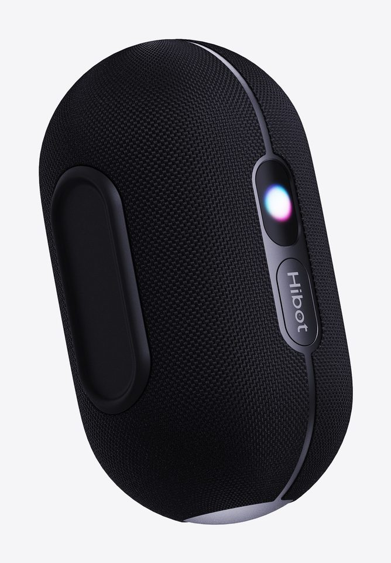
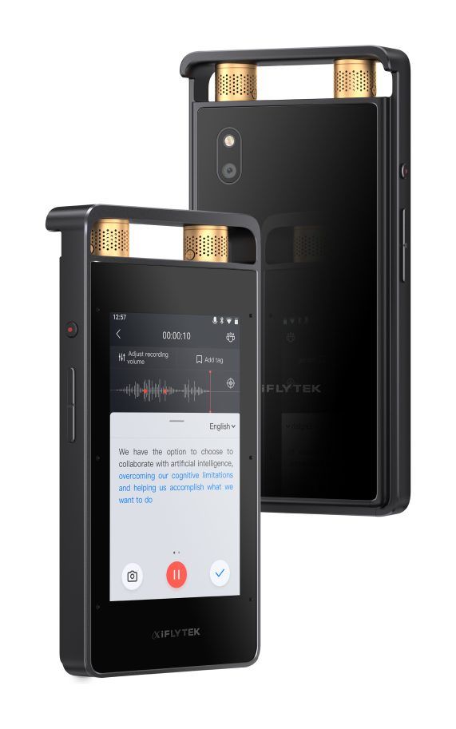
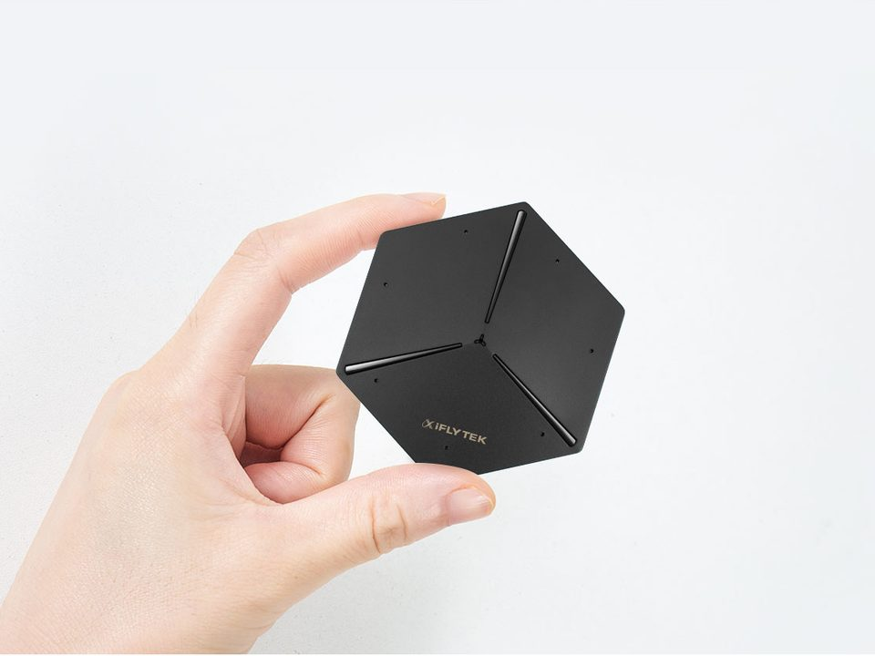
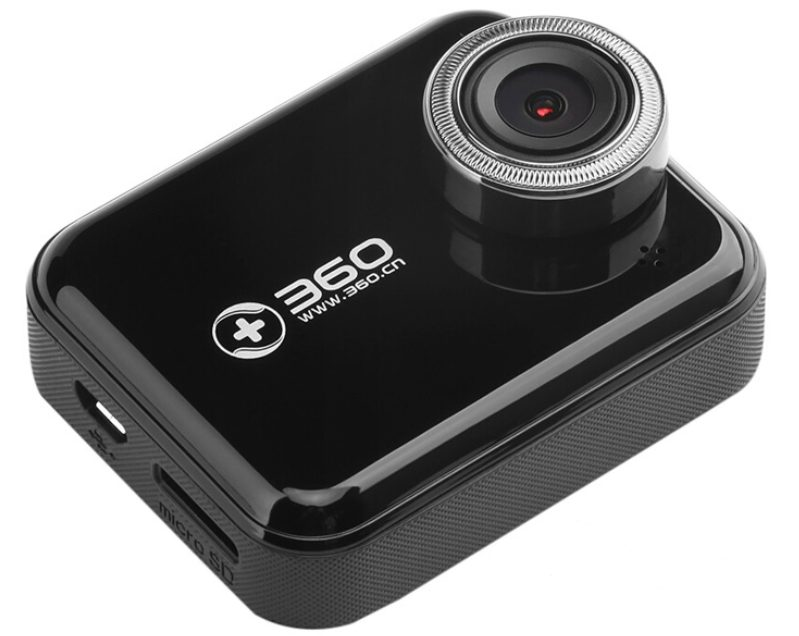
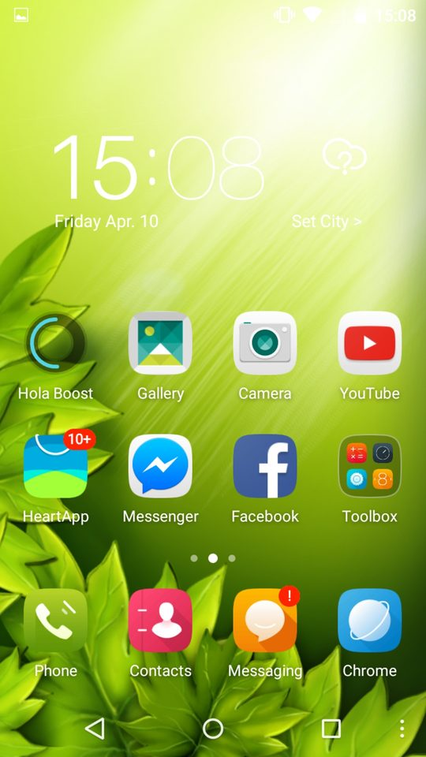
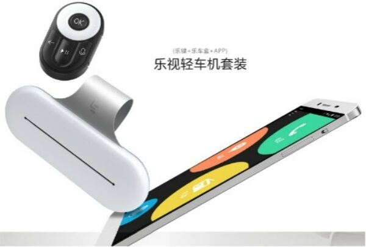
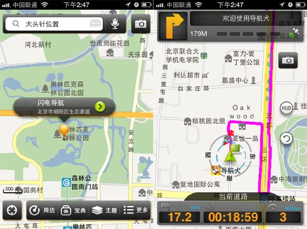
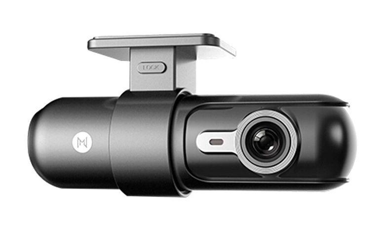

Hibot 爱阔 / 现已开售
Hibot S50 AI 便携式蓝牙音箱
这是我和伙伴创业做的第一款产品。按一下 Hibot 键，说出歌名就能播放；歌存在 TF 卡里，没有网络也能语音点歌。约 21 小时续航，IP67 防尘防水，支持 TWS 立体声和多台组队，徒步、越野跑、自驾和露营都能带上。
去官网看看 ↗现在我和伙伴一起创建 Hibot，做可以语音点歌的 AI 便携式蓝牙音箱，我是合伙人之一。此前在科大讯飞做了 7 年产品，主要负责讯飞录音笔和讯飞会议宝 S8 系列。
我是一名产品经理，现在也是创业者。2025 年 12 月我离开科大讯飞，和伙伴一起创建了 Hibot 爱阔，我是合伙人之一。我们的第一款产品是可以语音点歌的 AI 便携式蓝牙音箱 Hibot S50。我在讯飞担任高级产品经理，主要做讯飞录音笔 SR 系列，也负责讯飞会议宝 S8 系列从立项到售卖的全流程。
我从 2011 年开始做产品经理，做过地图导航（导航犬）、行车记录仪（极路客、360 行车记录仪）、车联网（乐视车联）、手机桌面（360 手机桌面、Hola Launcher），也做过花椒直播的 PC 官网。再往前，2008 年到 2011 年，我在北京城际高科做地图数据的技术支持，这是我职业的起点。
我做过的产品，很多是硬件加软件：行车记录仪、录音笔、会议宝，设备、手机、Web、PC 几端要放在一起想清楚。除了产品经理和创业者，我也把自己看作一个问题解决者。工作之外，我是一名奶爸，也一直把自己当作终身学习者。
离开科大讯飞后，和伙伴一起创建 Hibot 爱阔，我是合伙人之一。第一款产品 Hibot S50 是一台可以语音点歌的 AI 便携式蓝牙音箱，已在京东、天猫开售。官网：aihibot.cn
主要负责讯飞录音笔 SR 系列的产品规划，以及录音笔在手机、Web、设备三端的软件规划。同时负责讯飞会议宝 S8 系列从立项到售卖的全流程和产品技术运营，以及 S8 企业版配套 PC 软件的规划、设计和上线。
负责国内 360 手机桌面和海外 Hola Launcher 两款手机桌面产品的开发与运营变现。
负责乐视车联 App（iOS / Android）的整体产品设计规划，以及车联服务产品的设计规划和开发项目。
负责 360 行车记录仪 App（iOS / Android）的整体设计和开发项目，包括硬件连接、短视频分享等核心功能，Android 版完成 8 个大版本、30 个小版本的迭代。同时负责花椒直播 PC 官网的设计和开发项目。
导航犬和极路客是同一个创始团队先后做的两个产品。我负责导航犬 4.0 的地图、导航功能设计和 iOS 版本，以及与智慧奥迪（大连楼兰公司）的地图导航服务合作项目；也负责极路客 App（iOS / Android）的整体设计和极路客官网。极路客获得了创新工场的天使投资。
为城际通导航仪做地图数据工作：制作和分配地图数据任务，为道路和点位绘制提供技术支持。这是我和地图、导航打交道的起点。

这是我和伙伴创业做的第一款产品。按一下 Hibot 键，说出歌名就能播放；歌存在 TF 卡里，没有网络也能语音点歌。约 21 小时续航，IP67 防尘防水，支持 TWS 立体声和多台组队，徒步、越野跑、自驾和露营都能带上。
去官网看看 ↗
这是我在讯飞主要做的产品。我负责 SR 系列的产品规划，同时规划录音笔在手机、Web 和设备三端的软件，把硬件和各端软件放在一起考虑。

S8 系列从立项到售卖的全流程由我负责，包括产品、技术和运营相关的工作。企业版的配套 PC 软件，从规划、设计到上线也由我负责。

我负责 iOS 和 Android 两端的整体产品设计和开发项目，也负责硬件连接、短视频分享等核心功能的设计和开发。Android 版在我负责期间迭代了 8 个大版本、30 个小版本。

两款手机桌面产品，Hola Launcher 面向海外，360 手机桌面面向国内。我负责这两款产品的开发和运营变现。

乐视汽车的车联网产品。我负责乐视车联 App（iOS / Android）的整体产品设计规划，以及车联服务产品的设计规划和开发项目。

导航犬 2006 年上线，是国内的老牌手机导航，官方公布的用户数在 2013 年突破 7000 万，投资方有红杉中国和四维图新。我负责 4.0 版本的地图、导航功能设计和 iOS 版本，以及与智慧奥迪（大连楼兰公司）的地图导航服务合作项目。

极路客是导航犬团队二次创业做的智能行车记录仪，获得了创新工场的天使投资，李开复、徐小平都为它站过台。我负责极路客 App（iOS / Android）的整体产品设计和极路客官网。
有个问题想一起解决，或者想聊聊产品和 Hibot，欢迎写信给我。
chen100rui@gmail.com在各个社交平台上，我的网名一般是 CR100，搜一下就能找到我。